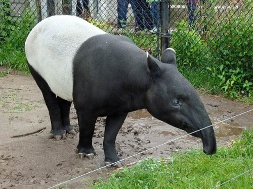
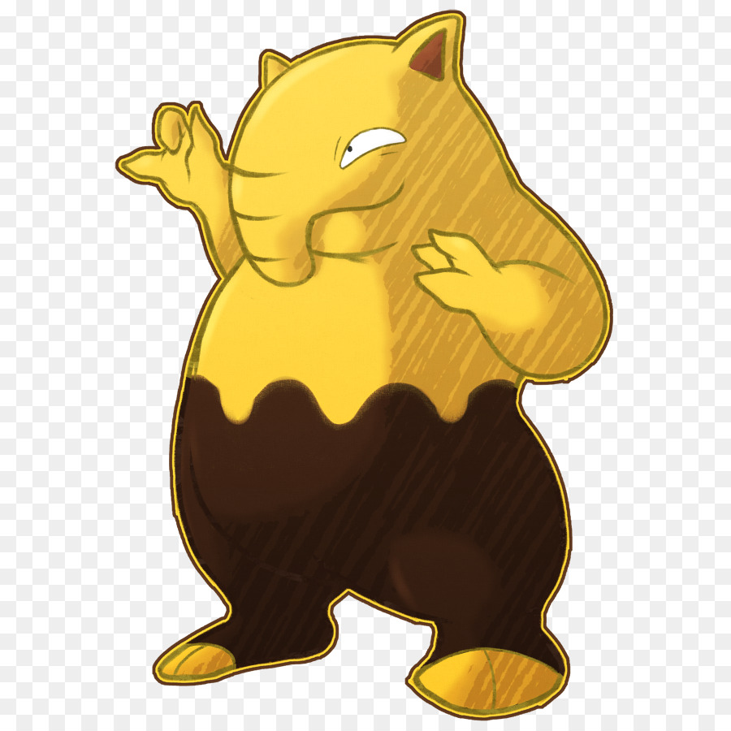

Pokemon является одним из самыхпопулярных аниме в мире. Премьера 1 серии этого мультика была 1 апреля 1977 года. Поемон был снят по мотивам одноименной серией игр. Действия сериала происходят в вымошленной вселенной покемонов, который полон чудесными существами за которыми охотяться "тренеры покемонов" что бы ловить их и тренировать для боя или для личной жизни. В начале каждому тренеру покемонов дают выбор одного из покемонов из которых Сквиртл, Бульбазавр и Чармандер. Главным героем этого сериала является Эш Кетчум из города Алабастия, который тоже решил стать тренером покеамонов. Когда у него был выбор между стартовыми покемонами Эш не мог определиться с выбором, он увидел еще одного покемона по имени Пикачу который ему очень понравился и с которым они провели все путешевствуие.
Интересные факты о покемонах
1. Покемонов придумал японский геймдизайнер Сатоси Тадзири, который в детстве увлекался коллекционированием насекомых. Это был популярным развлечением в Японии того времени.
2. На данный момент по играм, манге и аниме известно 718 разновидностей покемонов, у каждого из которых есть свой собственный уникальный набор атак и способностей.
3.Многие имена покемонов состоят из чисел
4.Плкемон Дроузи был срисован Тапира
 